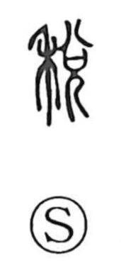

税

Uncategorized
Kun: | On: zei
tax ・ land tax ・ levy
Explanation
Tax is a phono-semantic character. Its original form, 稅, combines 禾 “grain” for meaning with 兌 as the phonetic, which provides the on-reading and is shared by related graphs like 悅 and 說. The Shuowen glosses it as 租, the land tax, indicating grain collected as rent from fields. The Spring and Autumn Annals records 初畝稅, the first levy assessed per 畝 (a unit of field area), showing a system that taxed planting space rather than actual yield. The graph thus evokes the collection of grain as a fixed land tax.